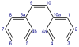

phenanthrene

Definition: Phenanthrene is a polycyclic aromatic hydrocarbon (PAH) with formula C14H10, consisting of three fused benzene rings. It is a colorless, crystal-like solid, but can also appear yellow. Phenanthrene is used to make dyes, plastics and pesticides, explosives and drugs. It has also been used to make bile acids, cholesterol and steroids.Phenanthrene occurs naturally and also is a man-made chemical. Commonly, humans are exposed to phenanthrene through inhalation of cigarette smoke but there are many routes of exposure. Animal studies have shown that phenanthrene is a potential carcinogen. However, according to IARC, it is not identified as a probable, possible or confirmed human carcinogen.Phenanthrene's three fused rings are angled as in the phenacenes, rather than straight as in the acenes. The compound with a phenanthrene skeleton and nitrogens at the 4 and 5 positions is known as phenanthroline.
Source: Wikipedia
Wikipedia Page (Something wrong with this association? Let us know.)
Wikidata Page (Something wrong with this association? Let us know.)